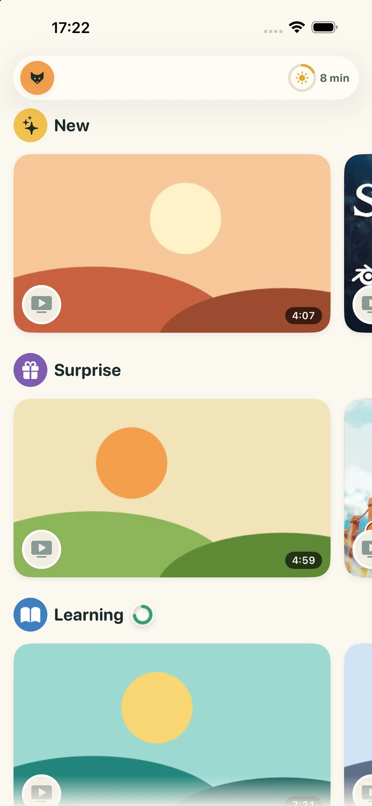
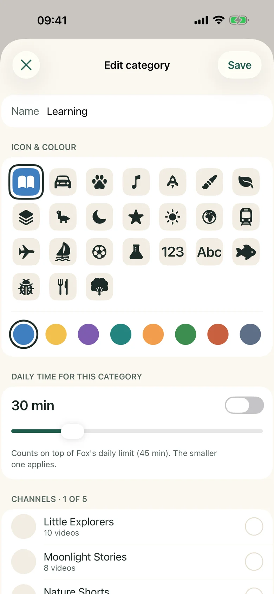
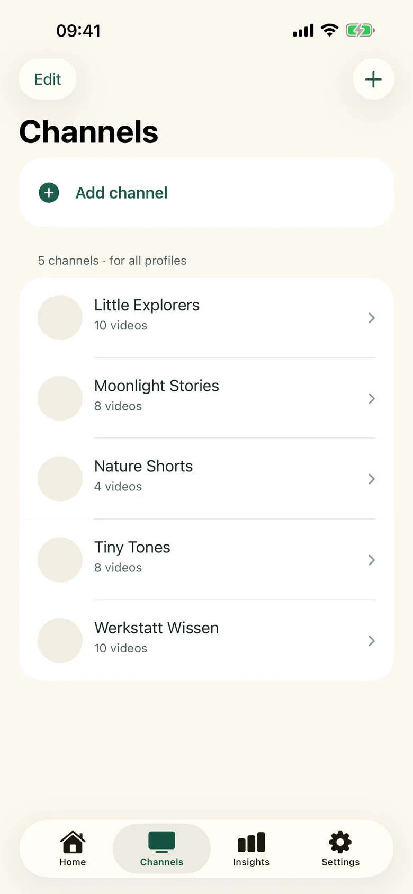
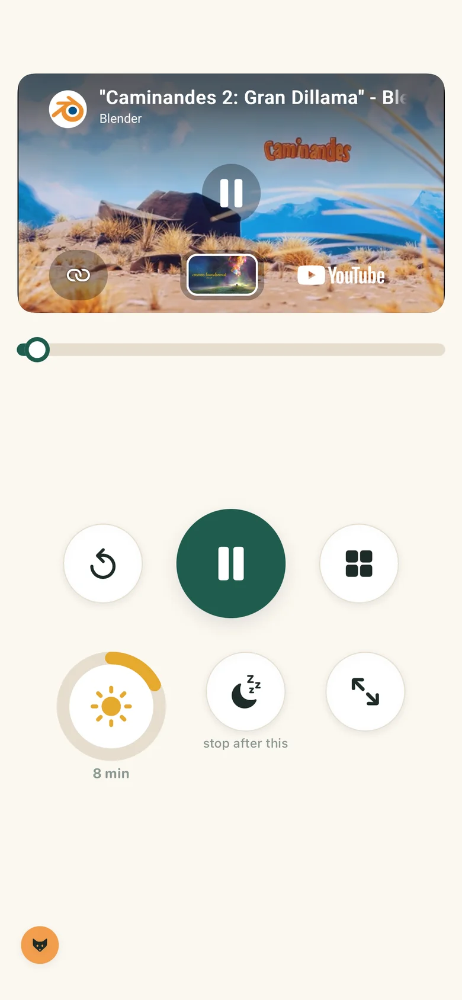
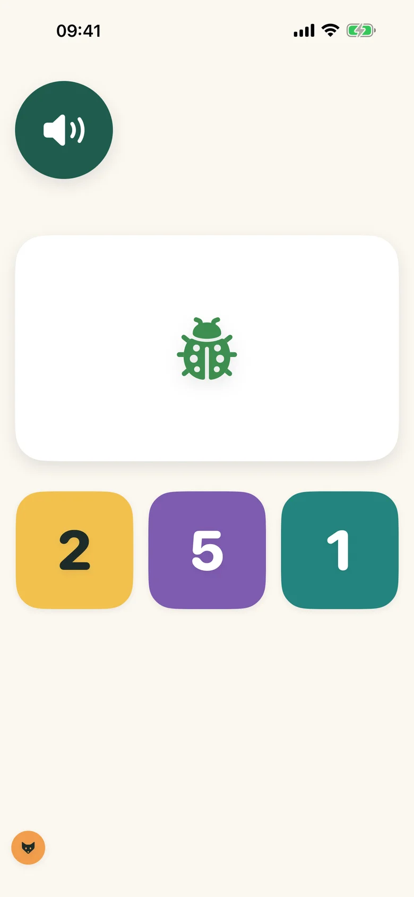
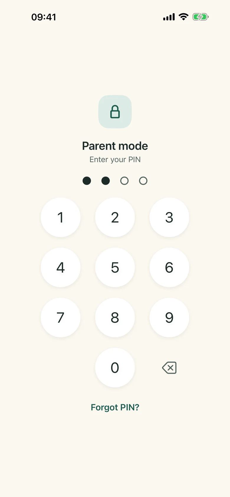
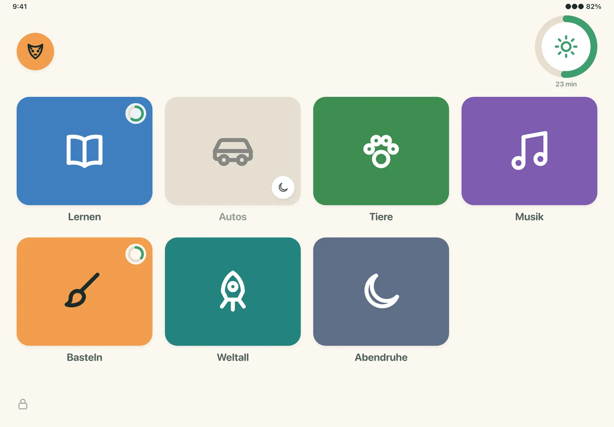

Your own categories
Make "Learning", "Cars" or "Quiet before bed" from the channels you trust, pick a colour and an icon, and give each category its own daily time budget.
Tubik plays videos from YouTube channels you approve, sorted into categories you make yourself — each with its own time budget. Your child gets a calm shelf of big picture tiles. You get the evening back.
For iPhone and iPad. A personal project — no accounts, no tracking, no ads of our own.

Most parents know a handful of channels they're happy with. Getting from there to a calm half hour is the hard part.
Autoplay and recommendations pull a small child from the episode you picked to things you never would have.
"Five more minutes" lands in the middle of a video. A hard cut-off mid-scene feels unfair to a five-year-old — and it shows.
Existing kids modes let an algorithm sort the world. You can't say "cars and space on weekdays, nature films before bed."
Everything here is in the first version. Nothing is sold around playback — the play button is never behind a paywall.
Make "Learning", "Cars" or "Quiet before bed" from the channels you trust, pick a colour and an icon, and give each category its own daily time budget.
Paste a channel or video link to add it. Hide single videos you'd rather skip, or limit a category to titles with words like "tractor". Nothing else shows up.
A big timer ring your child can read without numbers. One tap ends the session when the current video finishes — no cut-off mid-scene.
In the last few minutes the screen slowly gets darker, like the light at the end of the day. Brightness comes back as soon as the session ends.
Big picture tiles, no text to decode, no search box, no related videos to wander into. A pre-reader can choose on their own.
Instead of the next video starting by itself: a 15-second puzzle — count, colours, shapes, bigger or smaller — read aloud. Always skippable, never a gate.
Parent screens behind a PIN, a child side with nothing to get lost in.





Ten minutes of setup, then it runs on its own.
In parent mode, paste links to the channels you already like. Tubik fetches their videos; you can hide any single one.
Group channels into categories for your child's profile and set how long each may run per day, plus a daily total.
Start child mode. Your child picks from the shelf; the timer, the dimming and "stop after this video" handle the ending.

No account to create, no server of ours, no analytics. Profiles are a picture, an age band and a few interests — never a name, a birthday or a photo.
No. Tubik is an independent app by a single developer. It plays videos from YouTube channels you approve using YouTube's official embedded player. It is not affiliated with, endorsed or sponsored by YouTube or Google.
For parents of young children — roughly ages 3 to 9 — who already watch some YouTube together and want the parent, not an algorithm, to decide what's on the shelf and when it ends.
The child side has no search, no recommendations and no comments. It only shows videos from the channels in your categories, minus the ones you've hidden. Tubik moves to its own screen the moment a video ends, so YouTube's end-screen suggestions aren't something to tap.
Tubik itself shows no ads and contains no advertising SDKs. YouTube may show its own ads inside its player on some videos; Tubik can't change the player, so it can't remove them.
Tubik will be free to download. Pricing for optional extras for parents (for example more profiles) isn't final yet. Watching, the timer and child mode will never be behind a paywall.
No. There is no Tubik account and you don't sign in to YouTube. Because nothing is stored on a server, a forgotten parent PIN means resetting the app on that device.
iPhone and iPad, iOS 26 or later. The app is in English and German.
Tubik is in development for iPhone and iPad.
Not available yet